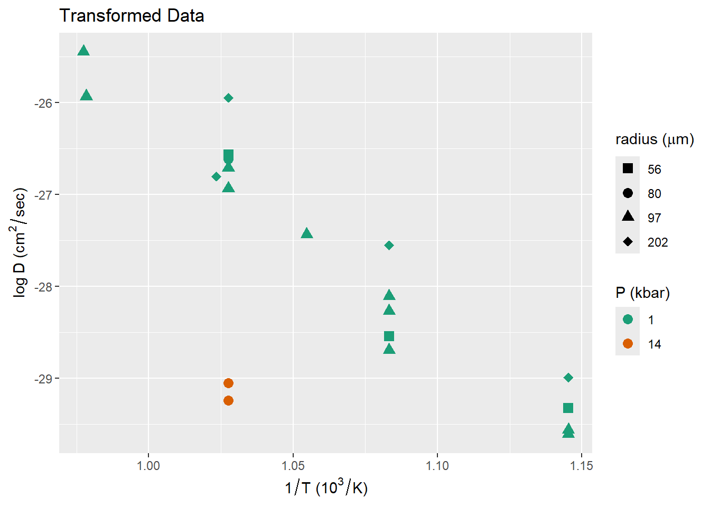

Use the lm() function to analyze the data using ordinary least-squares:
fit <-lm(y ~ x, df)
Show a summary of the results:
summary(fit)
Call:
lm(formula = y ~ x, data = df)
Residuals:
Min 1Q Median 3Q Max
-26.168 -8.699 2.071 6.326 21.451
Coefficients:
Estimate Std. Error t value Pr(>|t|)
(Intercept) 4.6689 2.2190 2.104 0.0379 *
x 7.4566 0.3834 19.450 <2e-16 ***
---
Signif. codes: 0 '***' 0.001 '**' 0.01 '*' 0.05 '.' 0.1 ' ' 1
Residual standard error: 11.18 on 98 degrees of freedom
Multiple R-squared: 0.7942, Adjusted R-squared: 0.7921
F-statistic: 378.3 on 1 and 98 DF, p-value: < 2.2e-16
We can extract coefficients from the fit using the coef() function:
coef(fit)
(Intercept) x
4.668894 7.456616
coef(fit)["(Intercept)"]
(Intercept)
4.668894
coef(fit)["x"]
x
7.456616
We can also get detailed information about the fit from the summary() function:
s <-summary(fit)s$coefficients
Estimate Std. Error t value Pr(>|t|)
(Intercept) 4.668894 2.2190391 2.104016 3.793673e-02
x 7.456616 0.3833819 19.449575 2.035544e-35
s$coefficients['x', 'Estimate']
[1] 7.456616
s$coefficients['x', 'Std. Error']
[1] 0.3833819
Plotting with Ordinary Least-Squares:
It’s always useful to plot your data and the fit. We can use the geom_smooth() function to add ordinary least-squares analysis to a plot of the data:
ggplot(df, aes(x = x, y = y)) +geom_point() +geom_smooth(method ="lm")
`geom_smooth()` using formula = 'y ~ x'
The gray area around the fitted line shows the 95% confisence interval for the line. This accounts for uncertainties in the intercept and slope of the line.
Remember that from the definition of confidence interval, this means that if you performed this analysis with many different samples of data from the same distribution, and plotted the confidence interval for each of these analysis, we expect that 95% of these confidence intervals would contain the correct line.
The correct line is determined by the distribution from which we sample the data, so all of the samples have the same “correct line,” but each will produce a different estimate of the line and its confidence interval, because each sample only looks at a finite amount of data from the true distribution.
Ordinary Least-Squares with Real Data
Now, let’s load some real data. Here, I’m taking paleoclimate data that uses tree rings to predict summer air temperatures in the Mackenzie Delta in Northwestern Canada.
Call:
lm(formula = t_min ~ growth_index, data = paleo)
Residuals:
Min 1Q Median 3Q Max
-2.52464 -0.62025 -0.03916 0.66740 1.65240
Coefficients:
Estimate Std. Error t value Pr(>|t|)
(Intercept) 3.4417 0.3516 9.789 < 2e-16 ***
growth_index 2.0820 0.2706 7.694 8.52e-12 ***
---
Signif. codes: 0 '***' 0.001 '**' 0.01 '*' 0.05 '.' 0.1 ' ' 1
Residual standard error: 0.8676 on 104 degrees of freedom
Multiple R-squared: 0.3627, Adjusted R-squared: 0.3566
F-statistic: 59.2 on 1 and 104 DF, p-value: 8.517e-12
Plot the data
ggplot(paleo, aes(x = growth_index, y = t_min)) +geom_point() +geom_smooth(method="lm") +labs(x ="Tree ring growth index",y =expression(paste("Minimum summer temperature (", degree * C, ")")))
`geom_smooth()` using formula = 'y ~ x'
General Least-Squares
But what do we do if the data doesn’t fall on a straight line?
Load some different data. This is from measurements of 40Ar diffusion in biotite. The researchers measured diffusion of 40Ar in different sized biotite grains, at different temperatures and pressures.
The data come from T.M. Harrison et al., Geomchim. Geocosm. Act.49, 2461 (1985). DOI: 10.1016/0016-7037(85)90246-7
ggplot(diffus, aes(x = t, y = d)) +geom_point(size =3) +labs(x ="T(K)", y ="D (cm^2 / sec)")
Data points represent different grain sizees and pressures, so it would be helpful to use other plot attributes to show these. In the language of the Tidyverse and the ggplot2 package, we call these different “aesthetics” of the plot.
The grain sizes and pressures have distinct values. There are 4 grain sizes (56, 80, 97, and 202 μm) and 2 pressures (1 and 14 kbar), but R doesn’t know what we intend, so we convert the radius (diffus$a) and pressure (diffus$P) to factors, which tells R that these variables have discrete values, and should be plotted with discrete shapes and colors:
diffus <- diffus |>mutate(P =factor(P), a =factor(a))ggplot(diffus, aes(x = t, y = d)) +geom_point(aes(color = P, shape = a), size =3) +scale_color_brewer(palette ="Dark2", name ="P (kbar)") +scale_shape_manual(values =c("56"=15, "80"=16, "97"=17, "202"=18), name =expression(paste("radius (", mu * m, ")"))) +labs(x ="T (K)", y =expression(paste("D (", cm^2/ sec, ")")))
The data clearly don’t lie along a straight line. Indeed, the physics of diffusion tells us that we should expect a linear relationship between \(\log(D)\) and \(1/T\).
Because the actual values of \(T\) are close to 1000 Kelvin, we transform the temperazture variable to \(1000 / T\) so the values will be close to 1.
Now, plot the data. I’m going to use this plot again, later, so I save it to a variable p_xform
p_xform <-ggplot(diffus, aes(x = t_inv, y = log_d)) +geom_point(aes(color = P, shape = a), size =3) +scale_color_brewer(palette ="Dark2", name ="P (kbar)") +scale_shape_manual(values =c("56"=15, "80"=16, "97"=17, "202"=18), name =expression(paste("radius (", mu * m, ")")) ) +labs(x =expression(paste(1/ T, " (", 10^3/ K, ")")), y =expression(paste(log~D, " (", cm^2/ sec, ")")),title ="Transformed Data") p_xform

This looks a lot more linear, except for the high-pressure (14 kbar) data.
Use lm() to fit the transformed data. In this way, our transformations convert a general least-squares problem into an ordinary least-squares problem. However, not all general least-squares problems can be transformed into ordinary least-squares, so this is a special case.